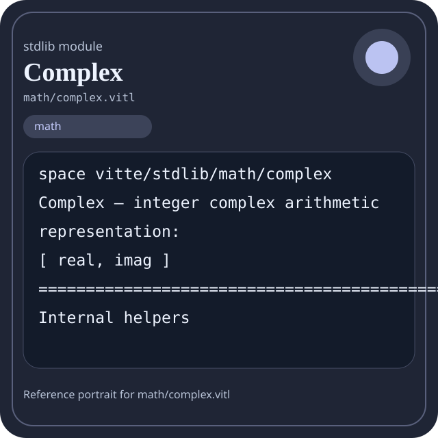

Stdlib module math/complex.vitl
This page is a wiki-style reference for one concrete stdlib file. It explains what the file owns, where it fits in the family, and how to decide whether this is the right surface to depend on.

math/complex.vitl.Family: math
Kind: public stdlib surface
Page style: this reference follows the same “encyclopedic card + portrait + usage contract” logic as the keyword pages, but for stdlib modules.
Summary
- Overview
- Purpose
- Taxonomy
- Implementation profile
- Top-level API inventory
- Position in family
- Declaration map
- Representative signatures
- How to use this module
- User example
- Keyword coverage
- Source shape
- Source landmarks
- Source organization
- Complete API catalog
- Integration boundaries
- Composition guidance
- Relationship table
- Neighbor modules
Overview
| Field | Value |
|---|---|
| Path | math/complex.vitl |
| Family | math |
| Kind | public stdlib surface |
| Line count | 492 |
| Declared procedures | 49 |
| Declared forms/picks | 0 |
`math/complex.vitl` is a public stdlib surface inside the `math` family. It should be read as one focused slice of the broader family responsibility: Arithmetic, algebra, comparison, calculus, geometry, modular arithmetic, number theory, probability, statistics, matrix, and vector helpers.
Purpose
This file should be chosen because of responsibility, not because its name “sounds close enough”. Inside the math family, it carries one focused part of the contract and keeps that responsibility separate from neighboring concerns.
- A scoring engine can compute aggregates in `math` while keeping I/O and transport elsewhere.
- A statistics or matrix chapter should explain the workflow around the computation, not just a single formula.
Taxonomy
Think of this page as a generated encyclopedia entry rather than a hand-written tutorial. The goal is to show what kind of module this is, how dense it is, and what reading strategy makes sense before depending on it.
- Large algorithm surface: this file exposes many procedures and likely acts as a domain toolkit rather than a single thin wrapper.
- Minimal top-level dependencies: the module reads as mostly self-contained from its opening declarations.
- Explicit export surface: the file ends with visible export declarations instead of relying only on implicit namespace discovery.
Implementation profile
This profile is inferred directly from the source text. It does not replace reading the file, but it tells you quickly whether the module is mostly declarative, loop-heavy, branch-heavy, or organized around many small exits.
| Signal | Count | What it suggests |
|---|---|---|
if | 47 | Branching density and local decision-making. |
while | 3 | Loop-heavy or iterative implementation style. |
for | 0 | Collection-style traversal at source level. |
match | 0 | Variant-driven branching or grammar-style decoding. |
let | 25 | Local state and intermediate value density. |
give | 94 | Number of explicit exit points and result shaping. |
Top-level API inventory
| Surface | Items |
|---|---|
| Procedures | abs_int, sqrt_floor, complex_pair, complex_zero, complex_one, complex_i, complex_is_valid, complex_real, complex_imag, complex_clone, complex_equal, complex_is_zero |
| Forms | none declared at top level |
| Picks | none declared at top level |
| Constants | none declared at top level |
| Exports | * |
Imported surfaces
This file does not advertise a top-level `use` surface in its opening declarations. That often means it is either self-contained or an aggregation layer.
Position in family
This file is module 7 of 21 in the math family when ordered by path. By procedure count it ranks 12, and by line count it ranks 11. Those ranks are useful as rough signals of breadth, not as quality judgments.
Declaration map
The declaration map turns raw source into a scan-friendly catalog. It is useful when the file is large enough that a reader wants to orient by kinds of surfaces first.
| Line | Name | Kind | Role |
|---|---|---|---|
| 1 | vitte/stdlib/math/complex | space | Declares the namespace that anchors this file in the stdlib tree. |
| 13 | abs_int | proc | Represents one top-level surface in the file contract and should be read as part of the module boundary. |
| 21 | sqrt_floor | proc | Represents one top-level surface in the file contract and should be read as part of the module boundary. |
| 49 | complex_pair | proc | Represents one top-level surface in the file contract and should be read as part of the module boundary. |
| 53 | complex_zero | proc | Represents one top-level surface in the file contract and should be read as part of the module boundary. |
| 57 | complex_one | proc | Represents one top-level surface in the file contract and should be read as part of the module boundary. |
| 61 | complex_i | proc | Represents one top-level surface in the file contract and should be read as part of the module boundary. |
| 65 | complex_is_valid | proc | Represents one top-level surface in the file contract and should be read as part of the module boundary. |
| 69 | complex_real | proc | Represents one top-level surface in the file contract and should be read as part of the module boundary. |
| 77 | complex_imag | proc | Represents one top-level surface in the file contract and should be read as part of the module boundary. |
| 85 | complex_clone | proc | Represents one top-level surface in the file contract and should be read as part of the module boundary. |
| 97 | complex_equal | proc | Represents one top-level surface in the file contract and should be read as part of the module boundary. |
| 105 | complex_is_zero | proc | Represents one top-level surface in the file contract and should be read as part of the module boundary. |
| 113 | complex_is_real | proc | Represents one top-level surface in the file contract and should be read as part of the module boundary. |
| 121 | complex_is_imaginary | proc | Represents one top-level surface in the file contract and should be read as part of the module boundary. |
| 129 | complex_is_unit | proc | Represents one top-level surface in the file contract and should be read as part of the module boundary. |
| 141 | complex_add | proc | Represents one top-level surface in the file contract and should be read as part of the module boundary. |
| 149 | complex_sub | proc | Represents one top-level surface in the file contract and should be read as part of the module boundary. |
| 157 | complex_neg | proc | Represents one top-level surface in the file contract and should be read as part of the module boundary. |
| 165 | complex_scale | proc | Represents one top-level surface in the file contract and should be read as part of the module boundary. |
| 173 | complex_mul | proc | Represents one top-level surface in the file contract and should be read as part of the module boundary. |
| 184 | complex_square | proc | Represents one top-level surface in the file contract and should be read as part of the module boundary. |
| 192 | complex_cube | proc | Represents one top-level surface in the file contract and should be read as part of the module boundary. |
| 204 | complex_conj | proc | Represents one top-level surface in the file contract and should be read as part of the module boundary. |
| 212 | complex_abs_sq | proc | Represents one top-level surface in the file contract and should be read as part of the module boundary. |
| 220 | complex_norm | proc | Represents one top-level surface in the file contract and should be read as part of the module boundary. |
| 224 | complex_abs | proc | Represents one top-level surface in the file contract and should be read as part of the module boundary. |
| 232 | complex_manhattan | proc | Represents one top-level surface in the file contract and should be read as part of the module boundary. |
| 240 | complex_chebyshev | proc | Represents one top-level surface in the file contract and should be read as part of the module boundary. |
| 256 | complex_dot | proc | Represents one top-level surface in the file contract and should be read as part of the module boundary. |
| 264 | complex_cross | proc | Represents one top-level surface in the file contract and should be read as part of the module boundary. |
| 272 | complex_distance_sq | proc | Represents one top-level surface in the file contract and should be read as part of the module boundary. |
| 283 | complex_distance | proc | Represents one top-level surface in the file contract and should be read as part of the module boundary. |
| 287 | complex_arg_quadrant | proc | Represents one top-level surface in the file contract and should be read as part of the module boundary. |
| 315 | complex_inv | proc | Represents one top-level surface in the file contract and should be read as part of the module boundary. |
| 334 | complex_div | proc | Represents one top-level surface in the file contract and should be read as part of the module boundary. |
| 353 | complex_has_inverse | proc | Represents one top-level surface in the file contract and should be read as part of the module boundary. |
| 371 | complex_pow | proc | Represents one top-level surface in the file contract and should be read as part of the module boundary. |
| 399 | complex_from_real | proc | Represents one top-level surface in the file contract and should be read as part of the module boundary. |
| 403 | complex_swap | proc | Represents one top-level surface in the file contract and should be read as part of the module boundary. |
| 411 | complex_perp_left | proc | Represents one top-level surface in the file contract and should be read as part of the module boundary. |
| 419 | complex_perp_right | proc | Represents one top-level surface in the file contract and should be read as part of the module boundary. |
| 427 | complex_mul_i | proc | Represents one top-level surface in the file contract and should be read as part of the module boundary. |
| 431 | complex_mul_neg_i | proc | Represents one top-level surface in the file contract and should be read as part of the module boundary. |
| 439 | complex_powers | proc | Represents one top-level surface in the file contract and should be read as part of the module boundary. |
| 461 | complex_re | proc | Represents one top-level surface in the file contract and should be read as part of the module boundary. |
| 465 | complex_im | proc | Represents one top-level surface in the file contract and should be read as part of the module boundary. |
| 469 | complex_version | proc | Represents one top-level surface in the file contract and should be read as part of the module boundary. |
| 473 | complex_ready | proc | Represents one top-level surface in the file contract and should be read as part of the module boundary. |
| 477 | complex_selftest | proc | Represents one top-level surface in the file contract and should be read as part of the module boundary. |
The table is exhaustive for top-level declarations of the selected kinds. This file declares 50 matching surfaces.
Representative signatures
These signatures are shown in source order so the page keeps the feel of a reference manual, not just a keyword cloud.
proc abs_int(value: int) -> int {(line 13)proc sqrt_floor(value: int) -> int {(line 21)proc complex_pair(real: int, imag: int) -> [int] {(line 49)proc complex_zero() -> [int] {(line 53)proc complex_one() -> [int] {(line 57)proc complex_i() -> [int] {(line 61)proc complex_is_valid(value: [int]) -> bool {(line 65)proc complex_real(value: [int]) -> int {(line 69)proc complex_imag(value: [int]) -> int {(line 77)proc complex_clone(value: [int]) -> [int] {(line 85)proc complex_equal(a: [int], b: [int]) -> bool {(line 97)proc complex_is_zero(value: [int]) -> bool {(line 105)proc complex_is_real(value: [int]) -> bool {(line 113)proc complex_is_imaginary(value: [int]) -> bool {(line 121)proc complex_is_unit(value: [int]) -> bool {(line 129)proc complex_add(a: [int], b: [int]) -> [int] {(line 141)proc complex_sub(a: [int], b: [int]) -> [int] {(line 149)proc complex_neg(value: [int]) -> [int] {(line 157)
The list is intentionally capped here; the source file declares 49 matching signatures in total.
How to use this module
Start by reading the file as an ownership boundary. Ask three questions: what enters this module, what stable types or procedures it exports, and what adjacent module should stay outside of it.
- Read
spaceand top-level imports first so the ownership boundary ofmath/complex.vitlis explicit. - Traverse procedures in source order; the early helpers usually explain the naming and numeric conventions used later.
- Use the source landmarks section below as a table of contents when the file is large.
- Only after that compare neighbor modules, because the right boundary choice matters more than memorizing one helper name.
User example
This example is generated from the actual stdlib module surface. Its job is not to be the smallest snippet possible; its job is to show a realistic consumer-shaped file that exercises the module and mirrors the language keywords the module itself relies on.
space demo/math_complex
proc run_example() -> string {
let entries = complex_pair(1, 1)
let ready: bool = complex_is_valid([1, 2, 3])
let failed: bool = false
let stable: bool = ready and true
let fallback: bool = ready or false
let idx: int = 0
let count: int = 0
while idx < entries.len {
set count = count + 1
set idx = idx + 1
}
if not ready {
give "not-ready"
} else {
give "ok"
}
}
export run_exampleKeyword coverage
This table makes the “all keywords of the module” requirement auditable. It compares the detected Vitte keywords in the source file with the generated consumer example above.
| Keyword | Present in module source | Used in generated user example |
|---|---|---|
space | yes | yes |
proc | yes | yes |
let | yes | yes |
set | yes | yes |
if | yes | yes |
else | yes | yes |
while | yes | yes |
give | yes | yes |
export | yes | yes |
true | yes | yes |
false | yes | yes |
and | yes | yes |
or | yes | yes |
not | yes | yes |
The generated snippet exercises every detected Vitte keyword used by this module.
Source shape
space vitte/stdlib/math/complex
proc abs_int(value: int) -> int {
if value < 0 {
give 0 - value
} else {
give value
}
}
proc sqrt_floor(value: int) -> int {
if value <= 0 {The excerpt is not meant to replace the file. It exists to make the module recognizable at first glance, the same way a Wikipedia infobox helps the reader orient before reading the whole article.
Source landmarks
Large files are easier to retain when they have visible landmarks. When the source contains explicit section banners, they are surfaced here; otherwise the first major declarations are used as anchors.
- Complex — integer complex arithmetic / representation / [ real, imag ]
- Internal helpers
- Construction / validation
- Predicates
- Basic arithmetic
- Conjugation / norms
- Derived operations
- Division / inverse
- Powers
- Special constructors / helpers
Source organization
When a file carries its own internal chaptering, those chapters usually reveal the intended reading order better than a flat symbol list. This section reconstructs that organization from the source itself.
Opening declarations
Top-level items: 1. Procedures: 0. Data surfaces: 0. Constants: 0.
First visible names: vitte/stdlib/math/complex
Internal helpers
Top-level items: 2. Procedures: 2. Data surfaces: 0. Constants: 0.
First visible names: abs_int, sqrt_floor
Construction / validation
Top-level items: 8. Procedures: 8. Data surfaces: 0. Constants: 0.
First visible names: complex_pair, complex_zero, complex_one, complex_i, complex_is_valid, complex_real, complex_imag, complex_clone
Predicates
Top-level items: 5. Procedures: 5. Data surfaces: 0. Constants: 0.
First visible names: complex_equal, complex_is_zero, complex_is_real, complex_is_imaginary, complex_is_unit
Basic arithmetic
Top-level items: 7. Procedures: 7. Data surfaces: 0. Constants: 0.
First visible names: complex_add, complex_sub, complex_neg, complex_scale, complex_mul, complex_square, complex_cube
Conjugation / norms
Top-level items: 6. Procedures: 6. Data surfaces: 0. Constants: 0.
First visible names: complex_conj, complex_abs_sq, complex_norm, complex_abs, complex_manhattan, complex_chebyshev
Derived operations
Top-level items: 5. Procedures: 5. Data surfaces: 0. Constants: 0.
First visible names: complex_dot, complex_cross, complex_distance_sq, complex_distance, complex_arg_quadrant
Division / inverse
Top-level items: 3. Procedures: 3. Data surfaces: 0. Constants: 0.
First visible names: complex_inv, complex_div, complex_has_inverse
Powers
Top-level items: 1. Procedures: 1. Data surfaces: 0. Constants: 0.
First visible names: complex_pow
Special constructors / helpers
Top-level items: 6. Procedures: 6. Data surfaces: 0. Constants: 0.
First visible names: complex_from_real, complex_swap, complex_perp_left, complex_perp_right, complex_mul_i, complex_mul_neg_i
Sequence helpers
Top-level items: 1. Procedures: 1. Data surfaces: 0. Constants: 0.
First visible names: complex_powers
Aliases
Top-level items: 6. Procedures: 5. Data surfaces: 0. Constants: 0.
First visible names: complex_re, complex_im, complex_version, complex_ready, complex_selftest, *
Complete API catalog
This catalog is the exhaustive file-level index for the module. It is intentionally closer to a generated encyclopedia appendix than to a tutorial summary.
Procedures
| Line | Name | Signature | Role |
|---|---|---|---|
| 13 | abs_int | proc abs_int(value: int) -> int { | Represents one top-level surface in the file contract and should be read as part of the module boundary. |
| 21 | sqrt_floor | proc sqrt_floor(value: int) -> int { | Represents one top-level surface in the file contract and should be read as part of the module boundary. |
| 49 | complex_pair | proc complex_pair(real: int, imag: int) -> [int] { | Represents one top-level surface in the file contract and should be read as part of the module boundary. |
| 53 | complex_zero | proc complex_zero() -> [int] { | Represents one top-level surface in the file contract and should be read as part of the module boundary. |
| 57 | complex_one | proc complex_one() -> [int] { | Represents one top-level surface in the file contract and should be read as part of the module boundary. |
| 61 | complex_i | proc complex_i() -> [int] { | Represents one top-level surface in the file contract and should be read as part of the module boundary. |
| 65 | complex_is_valid | proc complex_is_valid(value: [int]) -> bool { | Represents one top-level surface in the file contract and should be read as part of the module boundary. |
| 69 | complex_real | proc complex_real(value: [int]) -> int { | Represents one top-level surface in the file contract and should be read as part of the module boundary. |
| 77 | complex_imag | proc complex_imag(value: [int]) -> int { | Represents one top-level surface in the file contract and should be read as part of the module boundary. |
| 85 | complex_clone | proc complex_clone(value: [int]) -> [int] { | Represents one top-level surface in the file contract and should be read as part of the module boundary. |
| 97 | complex_equal | proc complex_equal(a: [int], b: [int]) -> bool { | Represents one top-level surface in the file contract and should be read as part of the module boundary. |
| 105 | complex_is_zero | proc complex_is_zero(value: [int]) -> bool { | Represents one top-level surface in the file contract and should be read as part of the module boundary. |
| 113 | complex_is_real | proc complex_is_real(value: [int]) -> bool { | Represents one top-level surface in the file contract and should be read as part of the module boundary. |
| 121 | complex_is_imaginary | proc complex_is_imaginary(value: [int]) -> bool { | Represents one top-level surface in the file contract and should be read as part of the module boundary. |
| 129 | complex_is_unit | proc complex_is_unit(value: [int]) -> bool { | Represents one top-level surface in the file contract and should be read as part of the module boundary. |
| 141 | complex_add | proc complex_add(a: [int], b: [int]) -> [int] { | Represents one top-level surface in the file contract and should be read as part of the module boundary. |
| 149 | complex_sub | proc complex_sub(a: [int], b: [int]) -> [int] { | Represents one top-level surface in the file contract and should be read as part of the module boundary. |
| 157 | complex_neg | proc complex_neg(value: [int]) -> [int] { | Represents one top-level surface in the file contract and should be read as part of the module boundary. |
| 165 | complex_scale | proc complex_scale(value: [int], scalar: int) -> [int] { | Represents one top-level surface in the file contract and should be read as part of the module boundary. |
| 173 | complex_mul | proc complex_mul(a: [int], b: [int]) -> [int] { | Represents one top-level surface in the file contract and should be read as part of the module boundary. |
| 184 | complex_square | proc complex_square(value: [int]) -> [int] { | Represents one top-level surface in the file contract and should be read as part of the module boundary. |
| 192 | complex_cube | proc complex_cube(value: [int]) -> [int] { | Represents one top-level surface in the file contract and should be read as part of the module boundary. |
| 204 | complex_conj | proc complex_conj(value: [int]) -> [int] { | Represents one top-level surface in the file contract and should be read as part of the module boundary. |
| 212 | complex_abs_sq | proc complex_abs_sq(value: [int]) -> int { | Represents one top-level surface in the file contract and should be read as part of the module boundary. |
| 220 | complex_norm | proc complex_norm(value: [int]) -> int { | Represents one top-level surface in the file contract and should be read as part of the module boundary. |
| 224 | complex_abs | proc complex_abs(value: [int]) -> int { | Represents one top-level surface in the file contract and should be read as part of the module boundary. |
| 232 | complex_manhattan | proc complex_manhattan(value: [int]) -> int { | Represents one top-level surface in the file contract and should be read as part of the module boundary. |
| 240 | complex_chebyshev | proc complex_chebyshev(value: [int]) -> int { | Represents one top-level surface in the file contract and should be read as part of the module boundary. |
| 256 | complex_dot | proc complex_dot(a: [int], b: [int]) -> int { | Represents one top-level surface in the file contract and should be read as part of the module boundary. |
| 264 | complex_cross | proc complex_cross(a: [int], b: [int]) -> int { | Represents one top-level surface in the file contract and should be read as part of the module boundary. |
| 272 | complex_distance_sq | proc complex_distance_sq(a: [int], b: [int]) -> int { | Represents one top-level surface in the file contract and should be read as part of the module boundary. |
| 283 | complex_distance | proc complex_distance(a: [int], b: [int]) -> int { | Represents one top-level surface in the file contract and should be read as part of the module boundary. |
| 287 | complex_arg_quadrant | proc complex_arg_quadrant(value: [int]) -> int { | Represents one top-level surface in the file contract and should be read as part of the module boundary. |
| 315 | complex_inv | proc complex_inv(value: [int]) -> [int] { | Represents one top-level surface in the file contract and should be read as part of the module boundary. |
| 334 | complex_div | proc complex_div(a: [int], b: [int]) -> [int] { | Represents one top-level surface in the file contract and should be read as part of the module boundary. |
| 353 | complex_has_inverse | proc complex_has_inverse(value: [int]) -> bool { | Represents one top-level surface in the file contract and should be read as part of the module boundary. |
| 371 | complex_pow | proc complex_pow(value: [int], exponent: int) -> [int] { | Represents one top-level surface in the file contract and should be read as part of the module boundary. |
| 399 | complex_from_real | proc complex_from_real(real: int) -> [int] { | Represents one top-level surface in the file contract and should be read as part of the module boundary. |
| 403 | complex_swap | proc complex_swap(value: [int]) -> [int] { | Represents one top-level surface in the file contract and should be read as part of the module boundary. |
| 411 | complex_perp_left | proc complex_perp_left(value: [int]) -> [int] { | Represents one top-level surface in the file contract and should be read as part of the module boundary. |
| 419 | complex_perp_right | proc complex_perp_right(value: [int]) -> [int] { | Represents one top-level surface in the file contract and should be read as part of the module boundary. |
| 427 | complex_mul_i | proc complex_mul_i(value: [int]) -> [int] { | Represents one top-level surface in the file contract and should be read as part of the module boundary. |
| 431 | complex_mul_neg_i | proc complex_mul_neg_i(value: [int]) -> [int] { | Represents one top-level surface in the file contract and should be read as part of the module boundary. |
| 439 | complex_powers | proc complex_powers(value: [int], count: int) -> [[int]] { | Represents one top-level surface in the file contract and should be read as part of the module boundary. |
| 461 | complex_re | proc complex_re(value: [int]) -> int { | Represents one top-level surface in the file contract and should be read as part of the module boundary. |
| 465 | complex_im | proc complex_im(value: [int]) -> int { | Represents one top-level surface in the file contract and should be read as part of the module boundary. |
| 469 | complex_version | proc complex_version() -> string { | Represents one top-level surface in the file contract and should be read as part of the module boundary. |
| 473 | complex_ready | proc complex_ready() -> bool { | Represents one top-level surface in the file contract and should be read as part of the module boundary. |
| 477 | complex_selftest | proc complex_selftest() -> bool { | Represents one top-level surface in the file contract and should be read as part of the module boundary. |
Exports
| Line | Name | Signature | Role |
|---|---|---|---|
| 492 | * | export * | Re-exports surfaces that the module wants to expose as part of its public boundary. |
Integration boundaries
Within math, this file should remain focused. If a future helper changes the host boundary, scheduling boundary, or data-shape boundary, it probably belongs in a neighbor module instead of being added here by convenience.
- Family responsibility: Arithmetic, algebra, comparison, calculus, geometry, modular arithmetic, number theory, probability, statistics, matrix, and vector helpers.
- Family architecture role: Use `math` when the transformation itself is the feature. This family exists so algorithmic intent stays visible and testable.
Composition guidance
Choose this module when
- Choose
math/complex.vitlwhen the main question is owned by this module rather than by transport, storage, orchestration, or user-interface code. - A scoring engine can compute aggregates in `math` while keeping I/O and transport elsewhere.
- A statistics or matrix chapter should explain the workflow around the computation, not just a single formula.
Pause before extending it when
- Avoid extending this file when the new helper mostly changes the boundary to host I/O, runtime coordination, or foreign integration instead of staying inside
math. - Check nearby modules such as
math/algebra.vitl,math/arithmetic.vitl,math/arrays.vitlbefore adding convenience wrappers here.
Relationship table
This table keeps the page closer to a real encyclopedia entry: a module is easier to understand when compared with its nearest alternatives in the same family.
| Neighbor | Procedures | Data surfaces | Why compare it |
|---|---|---|---|
math/algebra.vitl | 14 | 0 | Shares the same family boundary but carries a distinct slice of responsibility. |
math/arithmetic.vitl | 72 | 2 | Shares the same family boundary but carries a distinct slice of responsibility. |
math/arrays.vitl | 83 | 2 | Shares the same family boundary but carries a distinct slice of responsibility. |
math/calculus.vitl | 56 | 3 | Shares the same family boundary but carries a distinct slice of responsibility. |
math/comparison.vitl | 47 | 0 | Shares the same family boundary but carries a distinct slice of responsibility. |
math/geometry.vitl | 72 | 0 | Shares the same family boundary but carries a distinct slice of responsibility. |
math/logic.vitl | 20 | 0 | Shares the same family boundary but carries a distinct slice of responsibility. |
math/matrix.vitl | 53 | 0 | Shares the same family boundary but carries a distinct slice of responsibility. |